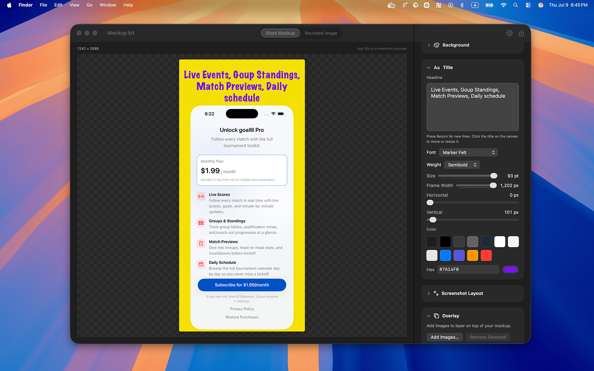
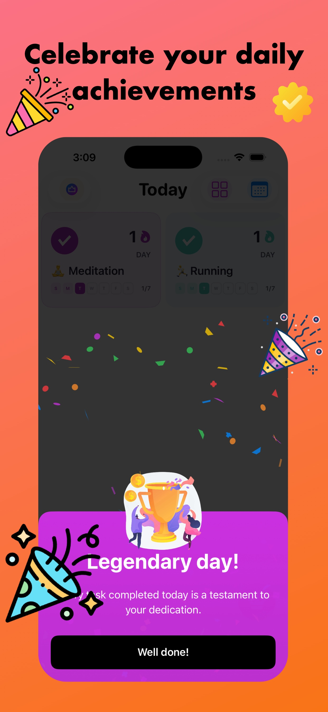

Best App Store Screenshot Backgrounds and Gradients
Backgrounds do more work than most teams expect. On an App Store product page, the canvas behind your iPhone frame sets mood, contrast, and brand recognition in a single glance. Choose poorly and the UI disappears. Choose well and the screenshot feels intentional before anyone reads a word.
This guide compares solid vs gradient App Store screenshot backgrounds, recommends color families that stay premium, and shows how to use Mockup Kit’s solid and gradient options — including custom start/end colors. For the full Mac workflow, start with How to Make App Store Screenshots on Mac. For shipping cadence tips, see the indie developer workflow.
Solid vs gradient backgrounds for App Store listings
Solid backgrounds are calm, fast to brand-match, and easy to keep consistent across a set. They shine when your UI already has busy charts, photos, or dense controls. A flat color lets the product speak.
Gradient backgrounds add soft depth and help a set feel modern without heavy illustration. They work especially well when the UI is minimal and needs a bit of atmosphere. Keep gradients gentle — two close hues, not a rainbow.
- Use solids for data-heavy screens and high-contrast typography.
- Use gradients for lifestyle, creative, or “premium dark” product stories.
- Stay consistent: one background system per release beats mixing five unrelated looks.
Best-practice color families (and what to avoid)
You do not need dozens of colors. Pick a family that supports your brand and stays readable next to App Store page chrome (mostly light surfaces and gray text).
- Blue / indigo. Trustworthy and versatile for productivity and finance-adjacent apps.
- Soft purple. Modern and distinctive when saturation stays controlled (Mockup Kit’s accent purple sits in this neighborhood).
- Dark premium. Charcoal or deep navy fields with restrained highlights for tools and pro apps.
- Warm neutrals. Creams and soft sand for lifestyle and content apps when UI contrast is strong.
Avoid neon pairs, high-saturation hot pink on cyan, and pure black or pure white fills. Neon backgrounds date quickly and fight device UI. Pure extremes make edges hard to judge and look unfinished on the product page.
Recommended solid colors (with hex values)
Enter these in Mockup Kit’s custom color field, or pick the closest preset and fine-tune. Each swatch is sized for quick visual comparison at a glance.
Indigo Blue#2563EB
Productivity, finance, utilities
Deep Navy#1E3A8A
Trust, pro tools, dashboards
Soft Purple#9E52F5
Creative apps, modern SaaS
Violet#7C3AED
Design, media, lifestyle
Charcoal Navy#1A1F36
Dark UI, premium tools
Midnight#0F172A
Pro apps, developer tools
Warm Cream#F5F0E8
Light UI, reading, wellness
Soft Sand#E8DCC8
Lifestyle, food, content
Recommended gradients (start → end hex)
Use these as custom gradient stops in Mockup Kit. Keep the angle simple — top-to-bottom or a soft diagonal reads best on App Store pages.
Productivity Blue#3B82F6 → #1D4ED8
Modern Purple#A855F7 → #6366F1
Sunset Warmth#F97316 → #EC4899
Dark Premium#1E293B → #0F172A
Fresh Teal#2DD4BF → #0891B2
Soft Dawn#FFF7ED → #FDE68A
Health Green#34D399 → #059669
Indigo Glow#818CF8 → #4F46E5
Most common colors and patterns on the App Store
Scroll top charts in any category and a few background systems repeat. These are not rules — but they explain why certain palettes feel “native” to the store while others feel out of place.
Soft vertical gradient
The most common pattern overall. Two related hues, lighter at the top, darker at the bottom. Works for productivity, social, and utility apps when UI is light or dark.
Single brand color field
One solid hex across the whole set — often the app’s primary brand color slightly desaturated. Common in finance, B2B, and tools where clarity beats atmosphere.
Dark premium canvas
Charcoal or navy backgrounds with light UI captures. Signals “pro” and shows up often in developer tools, editors, and subscription apps.
Light neutral field
Off-white and cool gray (#F8FAFC, #F1F5F9) behind light UI. Popular when the app itself is mostly white — the mockup adds subtle separation from App Store page chrome.
Warm duotone gradient
Orange-to-pink or coral-to-purple flows for lifestyle, fitness, and consumer apps. Keep saturation controlled so headlines stay readable.
Radial glow behind the device
Less common than linear gradients, but effective for hero screenshots: a soft spotlight draws the eye to the phone frame. Use one radial frame only; do not mix with busy patterns elsewhere in the set.
Category color habits (quick reference)
- Finance & productivity: blues and indigos (
#2563EB,#1D4ED8) — solids or subtle gradients. - Health & fitness: teals and greens (
#14B8A6,#059669) — often gradient for energy. - Social & entertainment: purples and magentas (
#A855F7,#EC4899) — warmer duotones. - Lifestyle & food: creams, sand, and peach (
#FFF7ED,#FDBA74) — light fields or soft warm gradients. - Developer & pro tools: dark navy and charcoal (
#1E293B,#0F172A) — minimal contrast noise.
When in doubt, match your category’s common pattern lightly — then differentiate with typography and framing, not a unrelated neon palette.
How to use Mockup Kit solid and gradient backgrounds
In Store Mockup, set the canvas background before you obsess over pixel-perfect title placement. Background decisions affect every later contrast choice.

The canvas is where you compose: import your capture, set background colors or gradient stops, position the headline, and add overlay PNGs before export.
Solid presets and custom colors
Start with a solid preset close to your brand, then refine with a custom color if needed. Check the screenshot at thumbnail size: if the device frame and UI buttons disappear into the canvas, lighten or darken the field.
Gradient presets and custom start/end colors
Pick a gradient preset for a quick direction, or set custom start and end colors for brand control. Keep the two stops related — same hue family or neighboring hues — so the gradient reads as polish rather than noise.
- Prefer subtle vertical or diagonal flows over busy multi-stop effects.
- Place the lighter stop behind dark UI, or the darker stop behind light UI.
- Export a test PNG and view it on a light desktop background to mimic App Store browsing.

The finished mockup: a soft warm gradient behind the device, readable headline type, and overlay artwork — ready for App Store Connect export.
Contrast tips with device UI and App Store chrome
App Store pages are bright. Your marketing canvas sits inside that environment, so extreme dark-on-dark or light-on-light stacks fail twice: once in the mockup, again on the store page.
- Headline contrast. Title color should clear the background by a comfortable margin, not just scrape by.
- UI separation. Leave breathing room so the iPhone capture does not melt into the canvas.
- Overlay restraint. Badges and artwork need clear edges; busy gradients make overlays harder to read.
- Set-wide rhythm. Vary screens, not background systems, so shoppers scan features instead of guessing a new theme each frame.
A simple decision checklist
- Is the UI busy? Prefer solid.
- Is the UI minimal? A soft gradient can help.
- Does the headline remain readable at thumbnail size?
- Would this palette still look intentional next to other App Store listings in your category?
- Can you reuse the same system across 6.1″ through 6.9″ exports without retouching every frame?
If you answer yes to the last two questions, you are close to shippable. For export sizes and the full compose flow, revisit App Store screenshots on Mac. Feature details live on the homepage features section.
FAQ
Should every screenshot use the same background?
Usually yes within one release. Shared solids or a shared gradient family makes the set feel like one product story. Minor tonal shifts are fine; brand resets between frames are not.
Are gradients better than solids for conversion?
Not automatically. Gradients help when atmosphere matters. Solids win when clarity matters most. Test both if you are unsure, but keep typography and framing consistent.
What colors should I avoid for App Store screenshot backgrounds?
Avoid neon clashes, pure white, pure black, and ultra-saturated fields that overwhelm UI chrome. Soft blue, purple, dark premium, and warm neutrals are safer starting points.
Can I set custom gradient colors in Mockup Kit?
Yes. Use gradient presets or custom start and end colors, then export PNG or JPEG at App Store Connect–aligned sizes.
Build cleaner backgrounds in minutes
Use solid and gradient backgrounds, headlines, and overlays in Mockup Kit — free for 3 days, then $1.99/month or $9.99 lifetime.